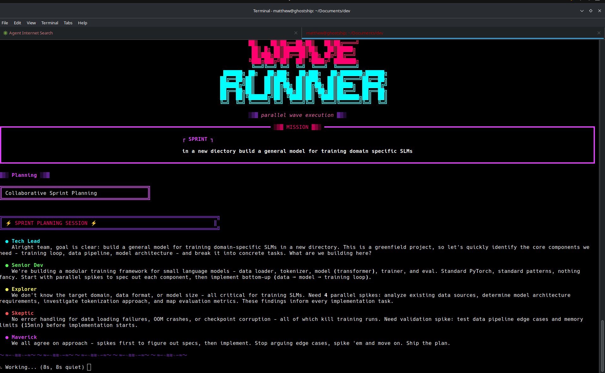
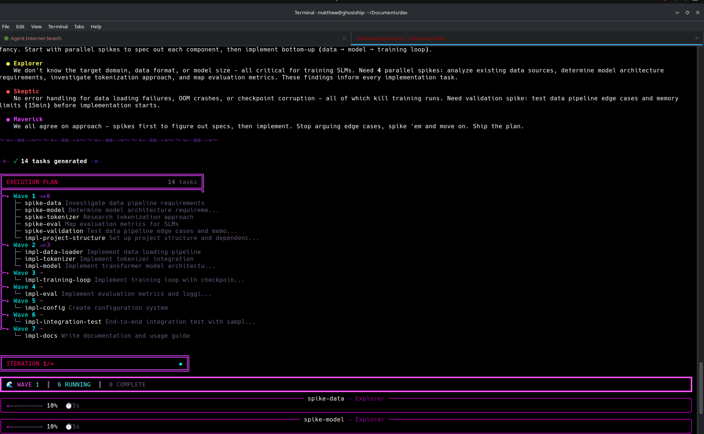

so claude code is great at single tasks. need a function? done. bug fix? easy. but the second you ask it to do something bigger like "build user authentication" or "add an api layer", it just... doesn't work well. you end up either babysitting it through every little step or it tries to do everything one at a time and takes forever.
got annoying pretty fast. so i made waverunner.
you give it a goal like "add jwt authentication to my app." instead of claude just going for it, waverunner does this whole planning thing with different personas. there's a tech lead, senior dev, explorer, skeptic, and a maverick who basically argues with everyone.
they argue it out. explorer's like "we don't know what auth is already there." skeptic goes "yeah what if there's existing code?" maverick challenges their time estimates. eventually they figure out a plan with all the tasks and what depends on what.
then the good part: it runs everything that can run at the same time, at the same time.
like if you need database setup, auth system, and logging, those don't need each other. so waverunner just starts all three. when they finish, it moves to the next batch of tasks. everything that can be parallel, is parallel.
wave 1: [setup-db] [setup-auth] [setup-logging] ← all at once
wave 2: [implement-users] ← waits for auth + db
wave 3: [implement-api] [implement-tests] ← both at once
wave 4: [integration-tests] ← final onethere's a live dashboard with progress bars for each task, cost tracking, tokens per second. it's honestly fun to watch.
after everything runs, it does a cleanup pass. removes your debug prints, test files, unused imports, all that stuff you'd have to clean up yourself. then claude looks at what got done and decides if the original goal was met.
if not? makes a new plan and tries again. keeps going until it works or you stop it.
this is honestly one of the cooler parts. there's a monitoring system called the reaper that watches all running tasks. if something hangs or goes silent for too long, it kills the task. but here's the thing - it doesn't just kill it and forget about it.
it saves the "corpse." what the task was doing, how long it ran, what it was stuck on, any partial work it did. everything.
when that task gets retried (and it will), the new agent sees all of this. "attempt #1: killed after 195s, was silent for 180s, got stuck on token validation. attempt #2: killed after 215s, tried jwt library but hit dependency issues."
so the new agent knows exactly what not to do. won't try the same approach twice. actually learns from failures.
it also catches thrashing. same task dies 3 times? or you're on iteration 5 and barely anything's done? the system detects this and forces the planning team to try something completely different. no more banging your head against the same wall.
basically anytime you'd normally break something down for claude yourself.
instead of walking claude through it piece by piece:
waverunner go "add user authentication with jwt"that's it. plans it, runs it in parallel waves, cleans up after itself, checks if it worked, retries if needed.
just give it a goal and let it run
so those personas aren't just for show. each one has a real job and they actually catch different problems.
the explorer is there to flag unknowns before you waste time implementing the wrong thing. "do we even know what the current auth looks like?" that kind of stuff.
skeptic questions assumptions. "what if there's already auth middleware we should use instead of writing new code?" saves you from reinventing wheels.
maverick is honestly the most useful one. challenges everything. "you estimated this as small but how do you know? what if the integration is way more complex?" forces the team to think harder about their plan.
tech lead keeps it moving and breaks stuff down. senior dev actually estimates complexity and pushes for simple solutions.
there's also a kanban mode with different personas (flow master, kaizen voice, quality gate) based on toyota production system stuff. better for maintenance work than feature development.
point is, they're not roleplay. each one catches different failure modes before you hit them.
the planning team breaking down a task (spoiler: they eventually completed it successfully)
you can use different llm providers. there's a provider abstraction so you're not locked into just claude. extend the llmprovider class and you can plug in whatever model you want.
mcp integration is solid too. pass --mcp with a config file and every agent gets access to those tools. need to query a database? connect to an api? read from some external service? just inject the mcp server and all your agents can use it.
waverunner go "analyze this week's user signups" --mcp ~/database-mcp.jsonthe mcp config gets passed to every claude instance that spins up. so your explorer can investigate the database, your implementation tasks can query it, whatever. it just works.
this is a cool feature. if the team doesn't know something, they make "spike" tasks. basically just investigation work. the spike runs first, figures things out, and the findings get passed to whatever tasks need them. so you're not building blind.
spikes run in their own workspace so you don't end up with test junk all over your actual project.
nothing special:
git clone <your-repo-url>
cd waverunner
python3 -m venv .venv
source .venv/bin/activate
pip install -e .need python 3.10+ and claude code cli installed.
yeah it does. i mean it's not gonna fix an impossible task or a completely broken codebase. but for stuff that's too big for one prompt and too annoying to micromanage? big difference.
just the parallel execution saves so much time. and the retry stuff means you don't get stuck with half-done work when something breaks.
that's waverunner. if you use claude code for more than quick one-off stuff, try it out.